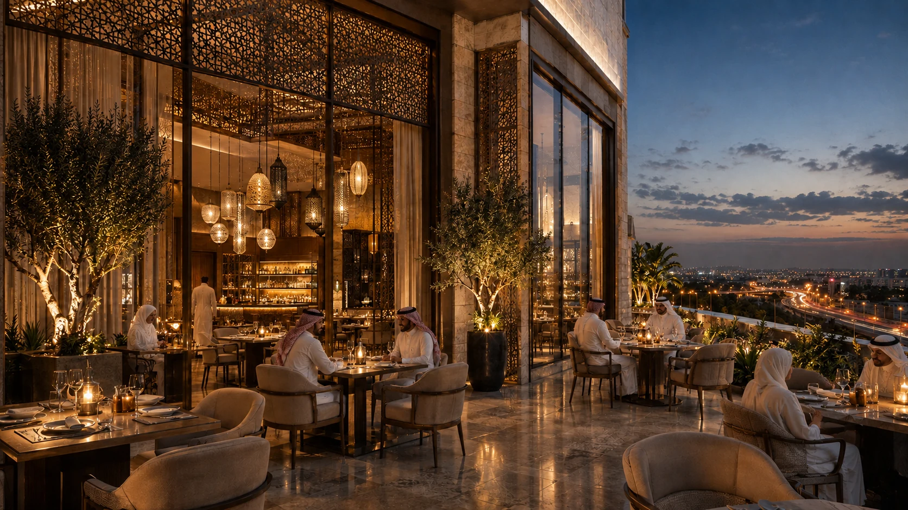
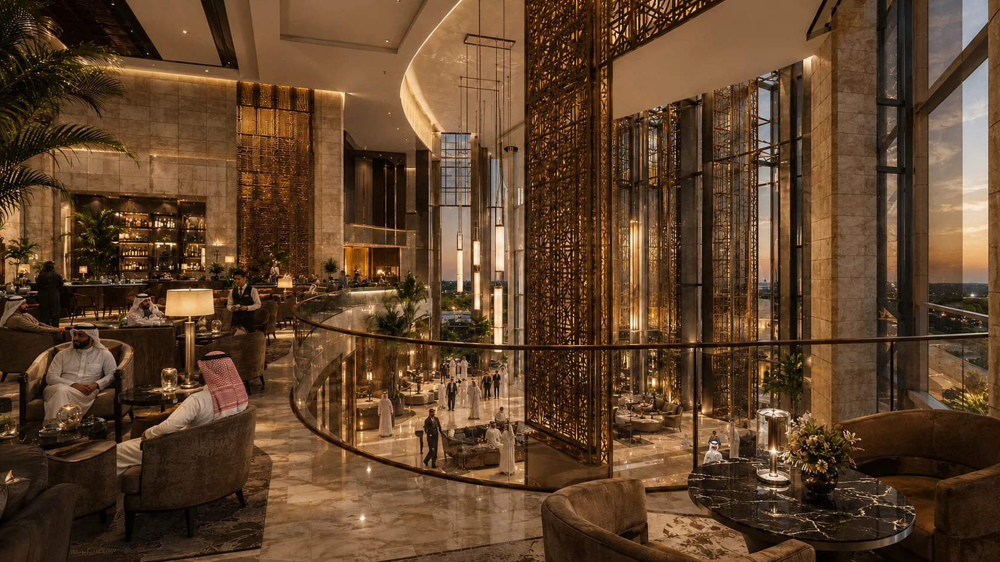
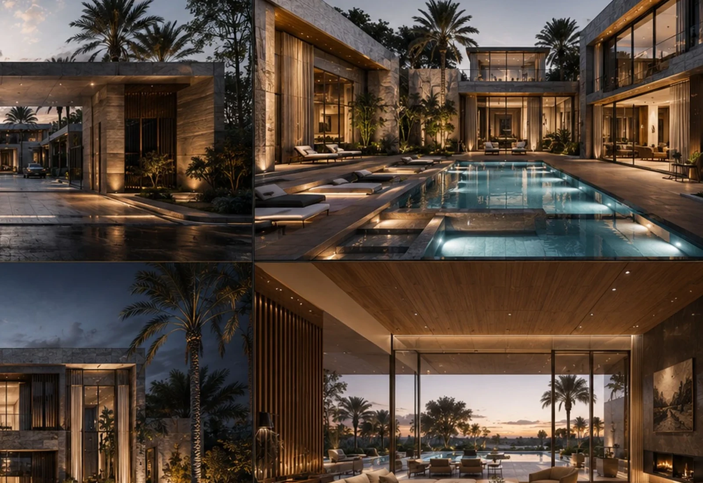
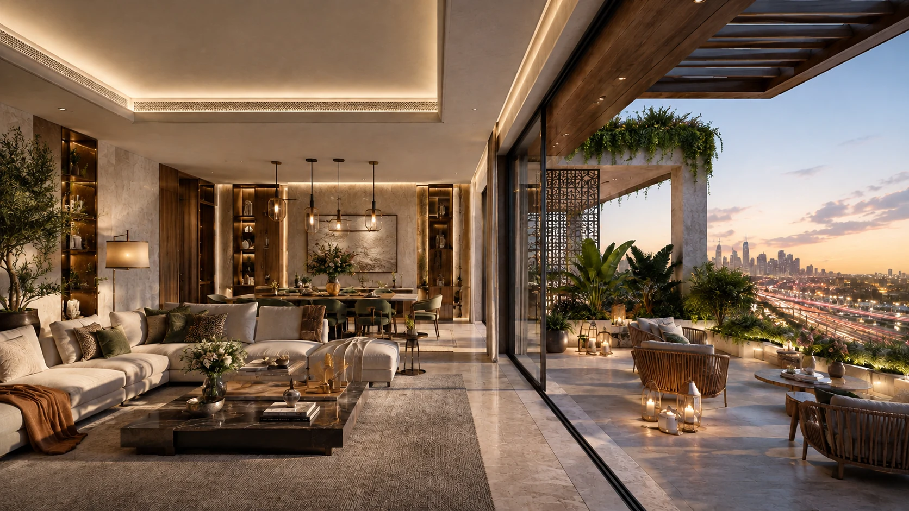
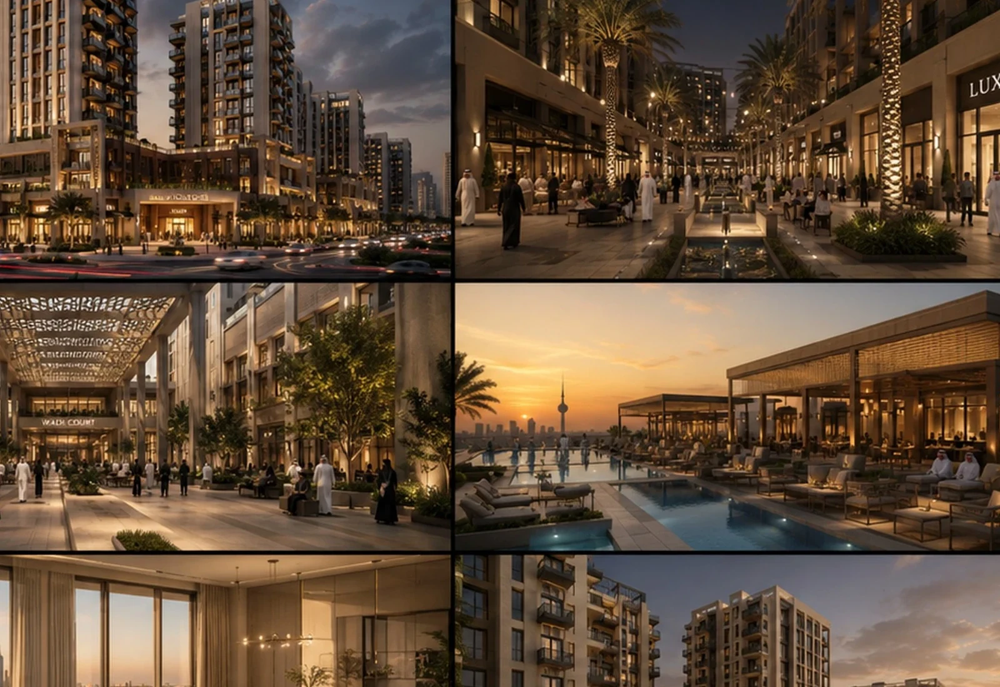
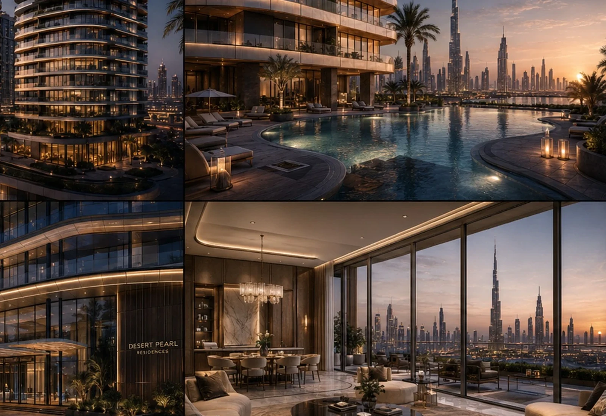

DEVELOPER⌖
Opportunity
Land, capital, ambition and market demand define the opportunity.
BADR Atelier works with developers before capital is locked into one answer.



We test important decisions against financial logic, market differentiation and long-term relevance.

Land, capital, ambition and market demand define the opportunity.
We connect site, product, planning, architecture, identity, engineering and BIM.
A commercially clearer, more memorable and more coordinated project.
Documented concept-stage / base-scenario indicators — not audited historical returns.

gross sales of SAR 124.8M against total cost of SAR 79.8M, giving the developer a clearer financial reading before locking the final route.
BADR's role is to improve the quality of the development decisions and let the financial model test the result.
We present the premium architectural experience rather than slide-board screenshots.

Two different examples show the same principle.
Our highest-value contribution often happens while the project is still flexible enough to improve.

Access, frontage, regulation, visibility and context.
Target segment, unit mix, typology and positioning.
Arrival, views, landscape, signature products and frontage.
Architectural language, materials and a coherent development story.
Structure, MEP, BIM coordination and quantities.
A place, an experience and a developer reputation that outlive the transaction.
You do not need every answer before speaking with us.

Understand the business model and constraints.
Map access, movement, climate and opportunity.
Compare product, density, mix and trade-offs.
Masterplan, plans, façades and landscape.
Resolve structure, MEP, clashes and buildability.
Controlled information and a clearer path forward.